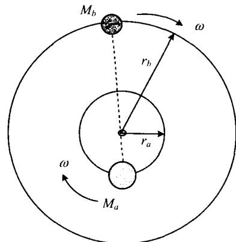
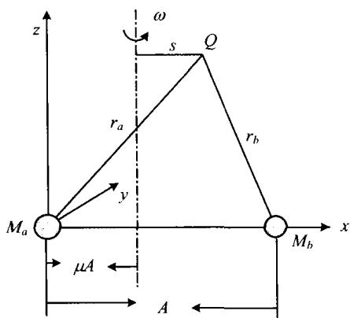
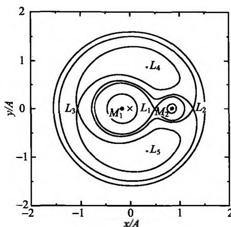
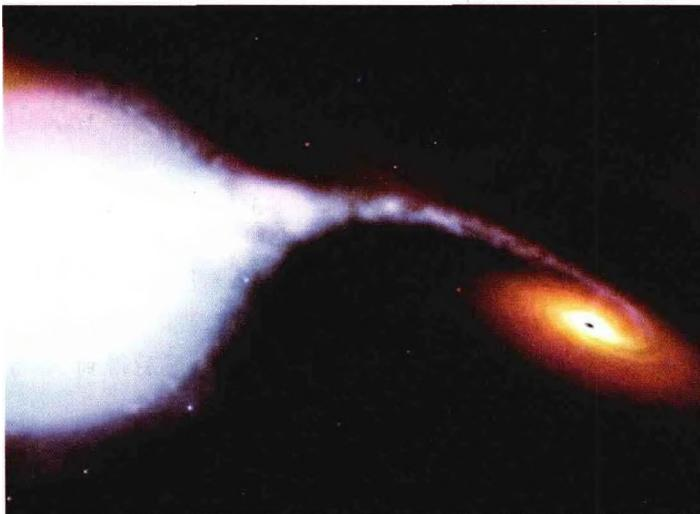
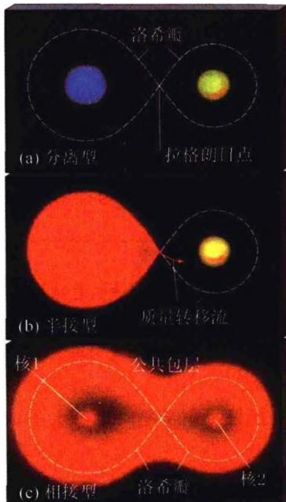
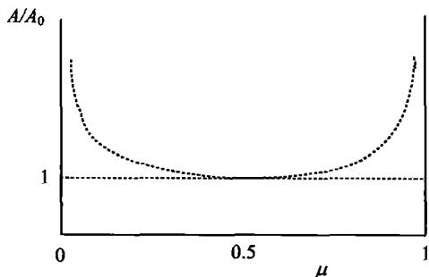
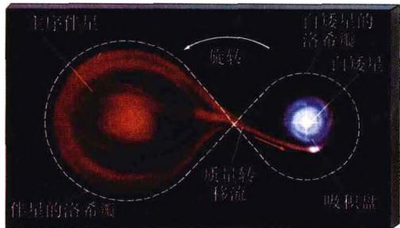
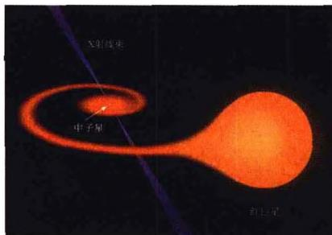
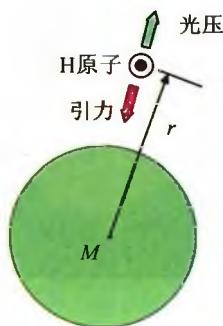

恒星世界中，一半以上的恒星是双星，还有大约10%是三合星，像太阳这样的单星只占少数。双星是恒星世界的普遍现象，是最小的恒星集群。
前面我们讨论过的恒星演化是关于单星的，单星基本上可以看成是一个孤立系统。一旦原恒星形成，它的演化主要依靠自身物理条件的变化，如密度、温度、压力及化学成分等，而演化的主导因素是恒星自身的引力。除了在原始恒星形成的早期阶段，以及大质量恒星演化的晚期，可能向周围空间有不同规模的物质抛射外，单星演化过程中不存在与其他恒星的物质交流。而双星特别是当两颗子星的距离很近时的情况就大为不同了。由于两颗子星非常靠近，星风、吸积过程、物质交流等影响非常显著，可能出现超高能辐射乃至各种形式的爆发（包括超新星爆发）等典型现象。像这样的一颗子星影响另一颗子星演化（或两子星之间有显著物质交流）的双星系统称为密近双星。密近双星在双星系统中较为普遍，对它们的研究可以使我们深入了解恒星的演化及内部结构，特别是对致密天体的研究、引力波探测、寻找黑洞有重大的意义。
不考虑物质交流时，密近双星两颗子星的运动是简单的。假定两颗子星密度分布的中心聚度都很高，也就是说，都可近似看成是质点，并且自转都可以忽略。在引力的作用下，两颗子星将围绕公共质心运转，轨道为同一平面上半径不同（设两星的质量不同）的两个圆轨道（图3.26），但它们围绕质心的公转周期或轨道角速度 \omega 是相同的。我们现在把参考系取为与轨道角速度 \omega 相同的转动坐标系，这样做可以得到不随时间而变的引力场。但如果

图3.26 双星的两颗子星以 质心为参考点的运动轨道要在此参考系中描述某个粒子的运动，除了引力外，还必须计入惯性离心力。通常计算中采用的是引力势和离心力势,而不是引力和离心力。对力场的这两种描述在本质上是没有区别的,因为我们从经典力学中知道,(保守)力就等于势能梯度的负值。
下面我们来建立坐标系。设两子星 a, b 的质量分别为 M_{a}, M_{b} （并设 M_{a} > M_{b} ）。两星距离为 A，公转周期 P，因而公转角速度为 \omega = 2\pi / P ，且由开普勒第三
定律有

图3.27 以 a 星为原点的坐标系\omega^ {2} A ^ {3} = G (M _ {a} + M _ {b})\tag{3.110}
定义 b 星的约化质量为 \mu = M_b / (M_a + M_b) ，则 a 星的约化质量为 1 - \mu 。现在我们把 a 星设为坐标原点（但注意转轴不通过原点）， x 轴穿过 b 星为两星连线方向， y 轴在两星的轨道平面内， z 轴垂直于轨道平面（图3.27）。再以 A 为长度计量单位，则两星质心的坐标是 (\mu, 0, 0) 。不难验证，在这样的转动坐标系中，空间坐标为 x, y, z 的 Q 点处的总势能（引力势能与离心势能之和，称为有效势） \Psi 满足
\begin{array}{l} \frac {A \Psi}{G \left(M _ {a} + M _ {b}\right)} \\ = \frac {1 - \mu}{\left(x ^ {2} + y ^ {2} + z ^ {2}\right) ^ {1 / 2}} + \frac {\mu}{[ (x - 1) ^ {2} + y ^ {2} + z ^ {2} ] ^ {1 / 2}} + \frac {1}{2} \left(x ^ {2} - 2 \mu x + \mu^ {2} + y ^ {2}\right) \end{array}\tag{3.111}
显然，等号右边前两项分别表示两子星的引力势，而第三项表示离心力势。这里我们来解释一下离心力势。它应当等于 \frac{1}{2}\omega^2 s^2 ，其中 s 是 Q 点到转动轴（通过质心）的垂直距离，即 s^2 = (x - \mu)^2 + y^2 ，因此离心力势等于 \frac{1}{2}\omega^2 [(x - \mu)^2 + y^2] 。再利用(3.110)把 \omega^2 解出，代入到离心力势中，就可以得到(3.111)等号右边第三项。(3.111)式中的 \Psi 也称为洛希(E.Roche)势能。 \Psi 等于常值的点，就构成三维空间中形状不随时间而变的一族曲面，称为洛希等势面族。图3.28所示为等势面在轨道平面上的截面图，即 z = 0 时的情况。
在等势面上的任意一点,有效势所确定的有效力(引力加惯性离心力)都是垂直于等势面的。因此,当一个粒子沿等势面(或等势线)运动时,不会受到力的作用,也就不需要做任何功。也就是说,粒子可以沿等势面自由运动。由有效势的分布可以计算出，在图3.28中共有5个作用力平衡的点，称为拉格朗日点。其中
L_{1}, L_{2}, L_{3} 为等势面鞍点（不稳定平衡点）， L_{4}, L_{5} 是稳定平衡点。 L_{1} 又称内拉格朗日点， L_{2} 称外拉格朗日点。通过 L_{1} 的等势面为两个相接的闭合曲面，形成了一个横躺的8字，它们代表了两颗子星的引力范围，称为洛希瓣（或洛希极限），又称内临界等势面，它决定了两颗子星表面最大的形状和界限。当子星在演化过程中膨胀，体积充满洛希瓣时，物质能够通过 L_{1} 逃逸到另一个子星。 L_{1} 亦即粒子受力为零的点，但容易看出，它的空间位置一般与质心是不重合的。在转动坐标系之外的惯性参考系中看来，整个系统只有质心是不动的，因而 L_{1} 相对质心有转动。这样，当物质通过 L_{1} 由一颗

图 3.28 洛希等势面族与拉格朗日点。该图取质心（×号所示）为原点，长度以两星距离 A 为单位子星流向另一颗子星时,这部分物质携带角动量,到了另一颗子星附近就会形成吸积盘(图 3.29)。

图3.29 吸积盘的形成通常把通过 L_{2} 点的等势面称为外临界等势面，它决定了围绕两星的公共包层的最大形状和界限。外拉格朗日点 L_{2} 是物质流出双星系统的“溢出口”。实际上， L_{3} 也起着与 L_{2} 相似的作用，但由于 L_{3} 比 L_{2} 离双星系统要远一些，故一般情况
下只关注 L_{2} 。

图 3.30 密近双星的分类,从上到下为:(1)分离型,(2)半接型,(3)相接型根据密近双星整体的演化情况,可以把密近双星分为3种类型(图3.30):1)分离型,此时每一子星都比各自的洛希瓣部分小很多;2)半接型,此时其中一颗子星已膨胀并充满自己的洛希瓣;3)相接型,此时两颗子星都充满洛希瓣。显然,在后两种情况下,双星之间的物质交流就不能忽略了。
我们首先来看一下，当双星的总质量保持不变时，两颗子星之间的距离与两子星质量分布之间的关系。设与总轨道角动量 J 相比，两子星的自转角动量均可忽略，则双星系统的 J, M_{a} + M_{b} 为常量。为方便起见，这里我们利用图 3.27，并取 Q 点为质心，则角动量可表示为
J = \left(M _ {a} r _ {a} ^ {2} + M _ {b} r _ {b} ^ {2}\right) \omega\tag{3.112}
质心的定义给出 M_{a}r_{a} = M_{b}r_{b} ，且 r_a + r_b = A ，故有
r _ {a} = \frac {M _ {b}}{M _ {a} + M _ {b}} A = \mu A, r _ {b} = \frac {M _ {a}}{M _ {a} + M _ {b}} A = (1 - \mu) A\tag{3.113}
注意到 M_{b} = \mu (M_{a} + M_{b}), M_{a} = (1 - \mu)(M_{a} + M_{b}) ，因而(3.112)化为
J = \mu (1 - \mu) A ^ {2} (M _ {a} + M _ {b}) \omega\tag{3.114}
再利用开普勒第三定律(3.110)消去(3.114)式中的 \omega ，最后得到 A 与 \mu 之间的关系为
A = \frac {M _ {a} + M _ {b}}{G M _ {a} ^ {2} M _ {b} ^ {2}} J ^ {2} = \frac {J ^ {2}}{G (M _ {a} + M _ {b}) ^ {3} \mu^ {2} (1 - \mu) ^ {2}}\tag{3.115}
此式表明，如果两子星之间的物质交流使 M_{a} 和 M_{b} 发生变化，相当于 \mu 在 0 < \mu < 1 之间变化，则两星之间的距离也会发生变化。图3.31给出 A / A_0 - \mu 的关系，其中 A_0 为 \mu = 0.5 （即两子星质量相等）时的 A 值。从图中可以看出，两子星的质量越平衡，它们之间的距离就越接近。
自20世纪70年代以来，天体物理学家已经可以借助于计算机，对密近双星的演化过程进行精确的理论计算。只要给定两颗子星的初始质量，则单星的演化过程是已知的；接下来的主要问题是两星之间的物质交流过程。这需要仔细计算每颗星的洛希瓣的大小，计算通过内拉格朗日点 L_{1} 流出流入物质的量，再据此修正每颗星

图3.31 密近双星的 A / A_0 - \mu 关系的质量以及接下来的演化,等等。计算过程是相当繁复的,但各种不同初始质量的演化结果都已经计算出来了。我们这里只介绍一下大致的结果。通常,双星系统中质量较大的子星(在我们假设的情况下即 a 星),将演化得较快,先离开主星序,变为红巨星。此时它的体积膨胀得很大,足以充满其洛希瓣。此后,物质开始由 a 星流向 b 星,两星之间的距离也变小。同时 a 星由于失去物质使洛希瓣变小,但余下物质仍然充满洛希瓣,继续流向 b 星。b 星接受质量,并且流入物质的引力能以热能形式释放,故其光度增加。随后 b 星也逐渐充满洛希瓣,直到两颗星恰好接触。在此以后,如果 a 星继续释放物质,则多余的物质将通过外拉格朗日点 L_{2} 逸出。

(a)白矮星吸积
(b)中子星吸积 图3.32 致密星的吸积因为 a 星是巨星, 所以洛希瓣只比中心氦核稍大, 物质的流出将继续到几乎把整个氢外层都流走, 只剩下裸露的氦中心核。如果核的质量小于氦闪的临界质量,或者发生电子简并形成碳-氧中心核时，a 星就变成致密星——白矮星。如果核的质量大于钱德拉塞卡极限 M_{ch} \sim 1.4M_{\odot} ，则内部将演化成铁中心核，继而发生超新星爆发，最后成为中子星或黑洞。
上述过程结束后，a 星已成为裸露的致密星（白矮星、中子星或黑洞）。但 b 星将继续演化，充满洛希瓣后，开始向 a 星的第二次物质交流。这样就转化为致密星的吸积问题。
在密近双星演化的最后阶段，先演化成为致密星的子星，开始对另一颗子星物质进行吸积。如前所述，内拉格朗日点 L_{1} 与双星系统的质心不重合，并相对于质心有转动。因此被吸积的物质通过 L_{1} 进入致密星的洛希瓣时，是携带有角动量的。这就使得大多数物质不是直接落到致密星上，而是进入环绕致密星运动的轨道，即形成吸积盘。之所以形成盘，是因为角动量守恒，使物质不能沿垂直于转轴的方向落向致密星，但可以沿平行于转轴的方向运动，这样就形成扁平的盘状结构（图3.29和图3.32b）。当然，实际的恒星物质并不是理想气体或理想流体，而是有一定的粘滞性。粘滞摩擦会使角动量减小，而角动量减小就会使轨道下降。因而，吸积盘内的物质，最终还是会从内缘部分开始，逐渐地落到致密星上。
被吸积物质在下落过程中，引力势能减少而动能增加，并有一部分能量变为辐射能，即增加了致密星的光度。按照位力定理给出的估计，被吸积物质失去的引力势能大约一半将变为辐射能放出，另有一半变为吸积盘的热能，使吸积盘的温度增高。因此，致密星的吸积率（即单位时间内吸积物质的质量）越大，它的光度也就越

图3.33 氢原子受到的引力与光压大(其中也要包括吸积盘温度升高所增加的光度)，看上去两者会成比例地增加，没有什么限制。但事实上，有一个重要的因素限制了吸积率和光度的增加，这就是辐射压。辐射压力会对下落的物质产生推斥力(光压)，因而使吸积率不能无限制地增加，而是有一个上限，这就是所谓的爱丁顿极限吸积率。
为简单起见,设被吸积的物质主要由氢原子组成。在距离引力中心 r 处(见图 3.33),单位面积的辐射压是
p = \frac {1}{3} u = \frac {1}{3} \cdot \frac {L}{4 \pi r ^ {2} c}\tag{3.116}
其中 L 是 r 处的光度， c 为光速。这一辐射压主要作用于电子，因而电子所受到的辐射压力是
p _ {\mathrm{e}} = p \sigma_ {\mathrm{e}} = \frac {L \sigma_ {\mathrm{e}}}{1 2 \pi r ^ {2} c}\tag{3.117}
式中 \sigma_{e} 为电子的汤姆孙散射截面 ( \sim10^{-25}~cm^{2} )。在极限情况下，这个辐射压与氢原子受到的引力相平衡，即
\frac {L \sigma_ {e}}{1 2 \pi r ^ {2} c} = \frac {G m _ {\mathrm{H}} M}{r ^ {2}}\tag{3.118}
这就给出光度的一个上限：
L _ {\mathrm{E}} = \frac {1 2 \pi c G m _ {\mathrm{H}} M}{\sigma_ {e}} \simeq 4 \times 1 0 ^ {3 8} \left(\frac {M}{M _ {\odot}}\right) \mathrm{erg/s}\tag{3.119}
L_{E} 称为爱丁顿极限光度。光度超过了这一极限，被吸积的物质将不再下落。
再设辐射能量完全由吸积物质的引力势能转化而来，即
L \sim \frac {G M}{r} \cdot \frac {\mathrm{d} M}{\mathrm{d} t}\tag{3.120}
由此并利用(3.119)，可知吸积率 \mathrm{d}M / \mathrm{d}t 也必须有一个上限
\frac {\mathrm{d} M}{\mathrm{d} t} \leqslant \frac {L _ {\mathrm{E}} r}{G M} \simeq 1 0 ^ {- 8} M _ {\odot} / \text {年}\tag{3.121}
这个上限就是爱丁顿极限吸积率,它在研究致密星吸积的问题时起着很重要的作用。
下面再回到密近双星演化最后阶段的讨论上来,我们主要关注致密星吸积物质后的结果。根据致密星的不同情况,其结果为:
如前所述，白矮星的质量有一个上限，即钱德拉塞卡极限，大致等于 1.4M_{\odot} 。如果吸积物质后，白矮星的质量仍小于这一极限，则可能出现新星爆发。新星是由于物质（主要是氢）从伴星向白矮星下落，在其表面堆积并引发热核爆炸的结果。白矮星表面的温度相当高，只要表面堆积的含氢物质足够多，就可以使氢发生突然聚变，导致白矮星外层爆发。但这一爆发是局域的，不会破坏白矮星的整体结构。爆发过程进行得也很迅速，并可以在短时间内阻止周围物质的下落。爆发使得白矮星可以在几个星期内保持光辉夺目，即使远在银河系边缘也能被观测到。迄今为止观测到的最明亮的新星之一是天鹅座1975新星，它的光度达太阳的100万倍，持续照耀了3天。新星爆发产生的总能大约为 10^{45}\mathrm{erg} ，其中大约有 10\% 储藏为星体内部的振动能，这使星体以 0.01\sim 1\mathrm{Hz} 的频率振动，并可以产生引力波辐射（见下一节）。多数新星只爆发一次，而有些爆发后经过一段时间，可能是数月或数年，当伴星物质在白矮星表面重新堆积到一定数量后，会引起新星再次爆发。
如果落在白矮星上的物质足够多，致使白矮星的总质量超过了钱德拉塞卡极限，这时电子的简并压力不再能够抵抗引力，白矮星就会坍缩。坍缩是瞬间发生的，这就是Ia型超新星爆发。坍缩和爆发将触发一系列核反应，其中最重要的是形成放射性元素 ^{56} Ni，然后通过 \beta 衰变成为 ^{56} Co，再经 \beta 衰变成为 ^{56} Fe。这两次 \beta 衰变是Ia型超新星后期光辐射的主要机制，它们的特征是指数衰减，而在Ia型超新星光变曲线中，的确看到的是这样的双指数衰减。由此我们可以认为，宇宙中的大部分铁元素是由Ia型超新星爆发合成的，因为Ⅱ型超新星爆发过程中，核心的大部分铁已经变成中子了。此外，与新星爆发不同，Ia型超新星爆发只能发生一次，爆发后白矮星彻底毁灭，只剩下碎片和灰烬。密近双星系统就此彻底瓦解，只有另一颗伴星留存下来，成为一颗单独的星。
这是密近双星系统中，其中一颗子星首先演化成为中子星的情况。初看上去，这种情况不大可能出现，因为如果一颗子星是中子星，它必然经历过猛烈的超新星爆炸，而爆炸会把另一颗子星炸飞，从而使双星系统瓦解。但实际观测却发现，双星系统中，的确有一颗子星是中子星（脉冲星）的情况。对此人们从理论上进行了许多探讨，目前的几种解释是：1) 超新星爆发前的双星并没有形成真正的束缚系统，爆发后才由于某种适合的条件而形成这样的系统；2) 超新星爆发后，不一定彻底摧毁双星系统，中子星和伴星依然保持为双星，但有关轨道参数会发生改变；3) 致密星原来是白矮星而不是中子星，但白矮星吸积物质后，不经过爆发而直接坍缩成中子星。当然，这需要改写我们前面讨论过的中子星形成的理论。
中子星表面一般都有很强的磁场，这就使中子星一般都表现为脉冲星（详细讨论见下一章）。如果中子星存在于双星之中，则双星轨道运动产生的多普勒频移，会使原来的脉冲信号叠加轨道周期的信息：当脉冲星向离开我们的方向运动时，脉冲之间的间隔变长；而当脉冲星向着我们运动时，这一间隔将变短。因此通过对接收到的脉冲信号的频谱分析，就可以把轨道周期的信息分离出来。正是利用这一原理，泰勒(J. Taylor)和赫尔斯(R. Hulse)1974年发现，脉冲星PSR1913+16是双星系统中的一颗子星，其脉冲周期为0.059s，轨道周期为27907s（约7小时45分）。轨道周期非常短，故只能是密近双星。更重要的是，他们发现轨道周期以 -2.4\times10^{-12} s/s的速率变化（公转速率加快），这样的速率变化正好与密近双星引力波辐射所预言的变化一致（见下一节）。由于泰勒和赫尔斯对脉冲双星的出色研究，他们获得了1993年度的诺贝尔物理学奖。
另一颗伴星也可能最后演化为致密星(通过爆发)，结果双星都成为致密星。例如 PSR1913+16 所在的双星系统，两颗子星都是中子星(脉冲星)。但由于另一颗子星的脉冲辐射方向没有对着地球，所以看不到它的脉冲。可以想象，要使两颗子星很窄的辐射光束都正好对着地球，这样的几率实在是太低了。至今只观测到一例来自同一双星系统的两颗脉冲星的脉冲信号，即2003年发现的PSR J0737-3039。
与密近双星中的中子星吸积相联系的，还有另一个重要的现象，就是毫秒脉冲星（参见4.3.4节）。这是脉冲星中脉冲周期最短的一类。与通常脉冲星显著不同的是，通常脉冲星由于自转动能的损耗会越转越慢，即脉冲周期会逐渐变长；但毫秒脉冲星的转动速率变化极小（是所有天文“时钟”中走时最稳定的），这表明自转动能（或自转角动量）必然得到了某种补充。现在认为，这是由于伴星物质在该脉冲星周围形成了吸积盘，随着物质从吸积盘持续地落到脉冲星表面，也把角动量带给了脉冲星，从而补充了转动能量的损失。另一方面，这样的角动量转移也可以解释毫秒脉冲星的形成：一个自转较慢的普通脉冲星，如果从吸积盘一下子获得了很大的角动量，则可能自转加速而变为毫秒脉冲星。
最后谈一下 X 射线双星。由于中子星表面的引力远强于白矮星（我们将在下一章更仔细地讨论这一问题），伴星物质向中子星回流下落的过程中，失去的引力势能转化为吸积盘的热能，会使吸积盘达到很高的温度。例如著名的 X 射线源武仙座 X-1，观测表明它是一个周期为 1.7 天的双星，吸积率为 10^{-9} M_{5} /年，相当于每秒钟吸积约 1000 亿吨的物质，这使得吸积盘的温度高达 1 亿度。在这样高的温度下，能量为 kT 的光子相应的平均波长是 0.14 nm，正好处于 X 射线波段（X 射线的波长范围是 0.001～10 nm，其中 0.001～0.1 nm 波段称为硬 X 射线，0.1～10 nm 波段称为软 X 射线）。因此中子星会发出很强的 X 射线辐射。如果吸积物质落到转动的中子星的磁极，则将表现为 X 射线脉冲星。如果吸积物质在中子星表面堆积，也会产生新星爆发那样的 X 射线暴，但释放的能量要大得多。因为中子星表面的引力比白矮星强很多，故下落物质使其表面达到比白矮星高出很多的温度。因此，被吸积的氢在中子星表面形成高温高密的壳层，并迅速以非爆发形式由氢转变成氦。这样，氦就覆盖了中子星的表面。当氦层厚度达到 1 m 时，就会发生爆发式的氦聚变，这就是 X 射线暴。像新星一样，X 射线暴也可能重复爆发，且没有任何周期性。但 X 射线暴极为罕见，估计每 10 亿颗恒星中只能出现一颗。
如果致密星的质量超过了中子星的临界质量(大约 3M_{5} )，在坍缩过程中就会变为黑洞。我们将在下一章中系统地介绍有关黑洞的知识，这里只简单地谈一下包含黑洞的双星系统。通过双星发现黑洞，是目前探寻黑洞的主要方向之一。恒星级的黑洞大小只有几公里，因此直接观测黑洞是不可能的，只有通过间接的办法，例如黑洞吸积伴星物质后的光学表现。黑洞的引力场比中子星更强，吸积盘的尺度更小，因而物质落到吸积盘上时，可以发出X射线甚至更高能的辐射。对恒星级黑洞而言，只要能确定发出高能辐射区域的大小为黑洞尺度，并且致密天体的质量为恒星量级，就可以基本上确定该天体为黑洞。黑洞的大小可以通过辐射区域的光变时标来估计，很小的光变时标相应于很小的发光区域尺度；质量可以通过双星的轨道运动来确定。实际观测已经发现了一批恒星级黑洞的候选者，其中著名的有天鹅座X-1，大麦哲伦云里的LMCX-3，麒麟座V616以及SS433等。这些天体都是很强的X射线源，并且有时标很短的光变。但由于观测上仍然存在一些不确定性因素，所以至今为止，还不能百分之百地认定它们就是黑洞。